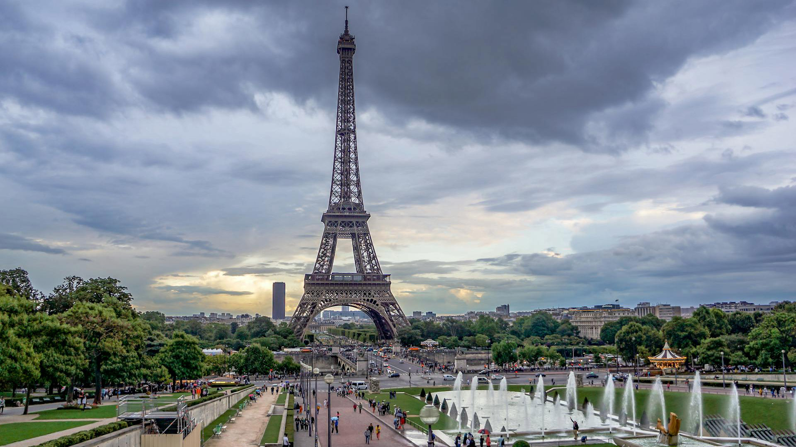

.jpg)
Франція — це найбільша країна Європейського Союзу, яка славиться своєю багатовіковою історією, вишуканою гастрономією, революційними винаходами та унікальним стилем життя «joie de vivre» (радість життя). Вона офіційно залишається найбільш відвідуваною державою світу, щороку приймаючи близько 90 мільйонів іноземних туристів.
На території Франції налічується понад 40 000 замків та палаців. Найбільша їхня концентрація розташована у долині річки Луара, де височіє знаменитий замок Шамбор.
Ейфелеву вежу збудували у 1889 році як тимчасову арку для Всесвітньої виставки. Її планували демонтувати через 20 років, але споруду врятували радіоантени, встановлені на верхівці.
Паризький Лувр утримує світове лідерство за відвідуваністю. Щоб оглянути кожен експонат хоча б протягом 30 секунд, знадобиться близько 100 днів безперервного перегляду
Щороку в країні з'їдають близько 30 000 тонн равликів (ескарго). Також популярною стравою є жаб'ячі лапки, через що французів жартівливо називають «жабятниками».

Франція стала першою країною у світі, яка законодавчо заборонила супермаркетам викидати або знищувати нерозпродані продукти харчування. Магазини площею понад 400 кв. м зобов'язані підписувати угоди з благодійними організаціями та передавати їм їжу, у якої закінчується термін придатності, але яка ще є безпечною.
У Франції легально дозволені посмертні шлюби. Якщо людина зможе довести, що померлий збирався з нею одружитися за життя (наприклад, вже була призначена дата весілля та куплені обручки), президент країни може особисто підписати дозвіл на такий шлюб.
У Франції досі формально діє старий закон, який забороняє називати домашніх свиней ім'ям Наполеон, щоб не ображати пам'ять великого імператора. Хоча сьогодні за це навряд чи заарештують, закон ніхто офіційно не скасовував.
Головний символ Парижа змінює свій зріст залежно від погоди. Через термічне розширення металу в спекотні літні дні Ейфелева вежа може ставати вищою на 15 сантиметрів, а її верхівка через нагрівання сонцем може відхилятися вбік на кілька сантиметрів.
Попри те, що сама Франція розташована в Європі й живе в одному часовому поясі, як держава вона має найбільше часових поясів у світі — всього 12. Це пов'язано з великою кількістю заморських територій та островів по всьому світу (Гваделупа, Мартиніка, Реюньйон, Французька Полінезія тощо).